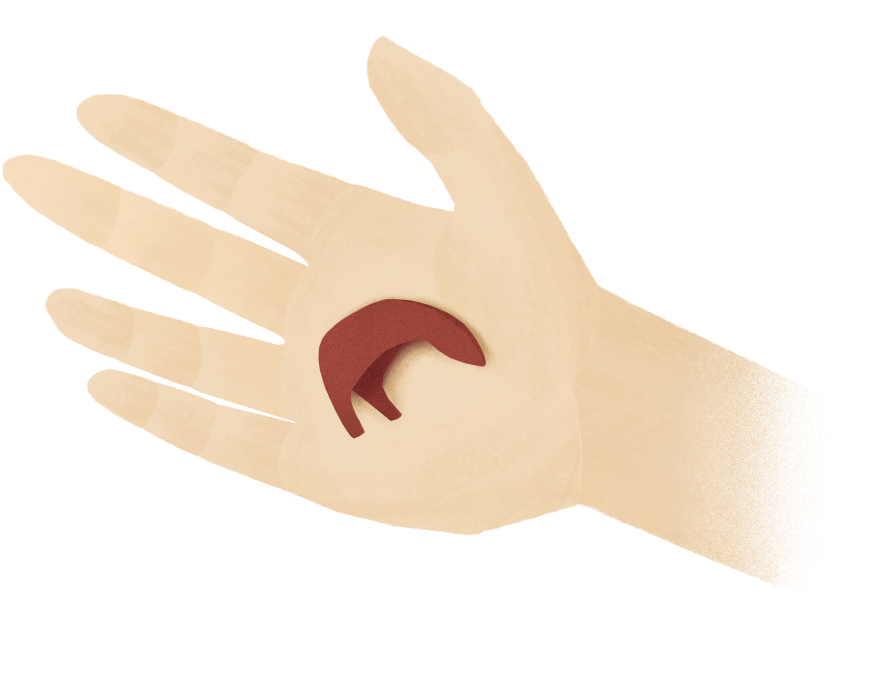
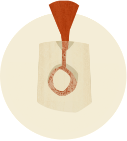
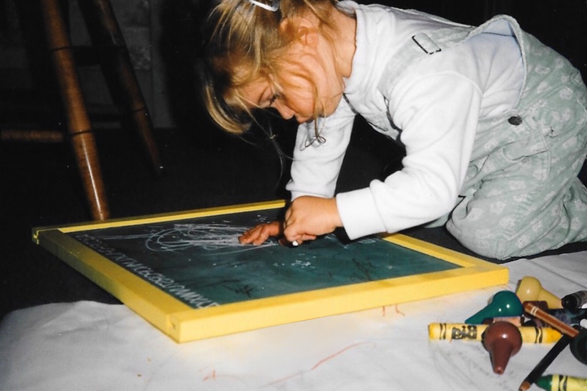
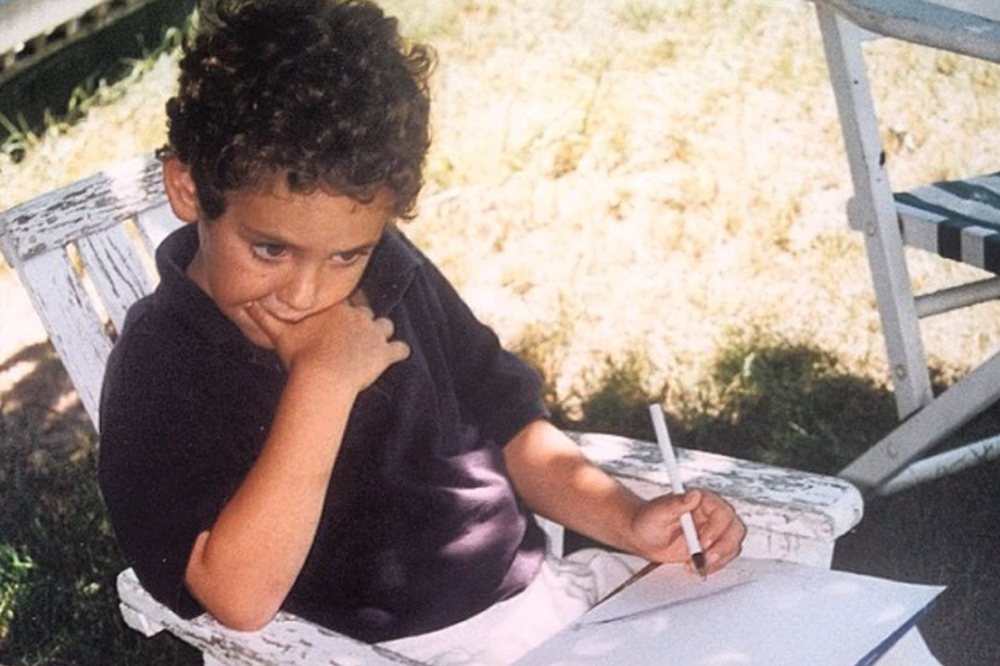

Our Story
We Discover
by Holding
Maçon was founded by two creative and life partners, Alex and Hannah. Their work is inspired by ancient artifacts, and by the intimate, personal objects they cared for when they were children.
Every piece is meant to be held: carried in a pocket, turned over in the palm, kept close. Like the talismans and keepsakes that inspired them, each one slowly takes on the story of whoever keeps it.

Our Practice
Carved by Hand,
Born of Fire
Each piece begins as a sketch on paper. Next, the object is carved by hand, first in wax, then fine-tuned in metal. We work closely with a local foundry to cast the wax carvings in bronze, silver or gold, and each piece is then refined and polished in our studio.
If its path is to become a collection piece, a rubber mold is made so that we can make the children of that original and share them with you. If it's a custom piece, it is one of a kind.





Our History
Drawn
Together
Maçon is based in Southern California, but Alex and Hannah met at RISD in 2008. They had figure drawing class together freshman year, and quickly became close friends.
After graduating, their love for each other never waned, despite gaps in distance and time. Eventually they found their way back to each other, and married in 2023. Both Maçon and their union were born of a desire to live and create as one.